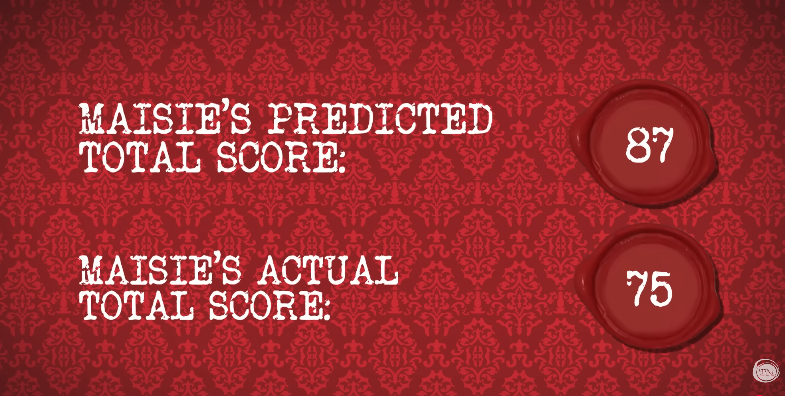

The (In)Accuracy of Maisie Adam
Your Task
Assess the accuracy, or inaccuracy (error), of Maisie Adam and her task attempt predictions in Series 20 of Taskmaster.
Figure 1: Maisie’s opinion on this task and the grilling, or rather microwaving, she is going to endure.

The Source of Data
Data has been compiled manually from the Bonus Content Youtube Clip.
Data can be found in the “MA_Predictions” tab of the Google Sheets doc.
Data of Discrepancies
Upon collating this data, I noticed the follow discrepancies in the data.
A Squirt of Error
For the “Make water squirt out of you in a surprising way.” task, Maisie verbally states her prediction as 5 points. However, the on screen graphics show her prediction as 4 points.
This task attempt is discussed starting at the 13:54 mark.
The Final Tally?
As indicated in Figures 2 and 3, there is a discrepancy in what the final tally is, both predicted and actuals, from the video source and when aggregated from the manually collated data.
- The Predicted Total Scores are lower in the on-screen graphic than manually collated (87 vs 88).
- This off by one discrepancy is accounted for in the previous section where there is a clear discrepancy between Maisie’s verbal prediction doesn’t match the on screen graphic.
- The Actual Total Score is higher in the on-screen graphic than manually collated (75 vs 64).
- This is a much larger discrepancy and requires a deep dive into how the onscreen actuals could have been derived.
Figure 2: The supposed final tally as presented in the video.

Figure 3: The final tally according to my spreadsheet, which like Sharkira’s hips, do not lie!
Figure 3: The final tally according to my spreadsheet, which like Sharkira’s hips, do not lie!
Figure 4: Break-it-Down-Now: A Breakdown of Ms Adam’s Points
Figure 4: Break-it-Down-Now: A Breakdown of Ms Adam’s Points
Table 4 shows a breakdown of the points accumulate by Maisie of the series, with respect to task type (Prize, Pre-Record, Live) and whether it was a team task or not. Note that:
- Maisie’s predictions were only for the Pre-Recorded Solo Tasks, and one outlier Team task (not with the usual team, other team mates were not present when task was being performed).
- From Table 4, Maisie accumulated 65 points in all her pre-recorded solo tasks, and the outlier team task earned her an additional 5 points. By this reasoning, I deduce that Maisie’s actual points received for the the tasks she made predictions on to be 70, and not 75 as presented on the screen.
- If the on screen actual points is for all pre-recorded tasks, both solo and live, then Maisie’s actual points would be 85, and still not the presented 75 points.
- If this was the case, then it is not fair to compare predictions to actuals, where the number of tasks forming the predictions and actuals are different. In this case, the number of tasks the actuals are computed over is larger than those for the prediction, and thus the actual points will inherently be larger than predicted points (particularly since points are non-negative).
The Absent Task
On double checking and cross referencing my data, I noticed that Maisie did not provide a prediction in the task “Make the most fantastic 15-second film featuring your face in full frame.” (Task 4 in Episode 9. This was a solo, pre-record task so would be a prime candidate for Maisie to provide a prediction. Maisie, and all other contestants, were awarded 5 points by Greg for this task.
However, the absence of the prediction of this task, still doesn’t provide closure to the discrepancy in the final tally.
So, what’s the (Data) Situation?
Despite the data issues, our analysis will proceed with using the data collated in the Google sheet, and not what was presented on screen in the Taskmaster source video. This is rooted in have a better understanding and more control over this dataset.
Figure 5: Little Alex Horne’s opinion on this data situation, and making the most of what you have in life!

A Comedy of Prediction Errors
It is clear from Figures 2 and 3, that at an overall level, Maisie was overly confident and optimistic with her task predictions; her predicted score total exceeds her actual total score by 24 points.
This is a good starting point in assessing Maisie’s prediction ability. However, we may also want to know if Maisie was overly confident on only a select number of tasks (which was sufficient to show over prediction at the total level), or if she was overly optimistic in the majority of her predictions.
The General Overview
Figure 6: A Comedy of Prediction Errors
Figure 6 shows various statistics on the prediction errors with particular interest in the error at the task prediction level, rather than just the overall total level. We can see that:
- Maisie was predominantly overly optimistic with her predictions. Out of the 24 task predictions she made, she was overly optimistic in 14 tasks (58%).
- Conversely she was pessimistic in 6 tasks (25%), and made perfect predictions in 4 tasks (17%).
- Maisie was out by an error of 24 points overall, an average error of 1.00 per task prediction. This encompasses both positive and negative prediction errors, some of which may cancel out when presenting the overall totals.
- If we were interested in the pure size of errors (and not the sign or direction), Maisie was out by an absolute error of 40, with an average error of 1.67 per task prediction.
- Maisie was overly optimistic with her predictions with an over prediction error of 32 points (80% of absolute error).
- Conversely, she was pessimistic with her predictions with an under prediction error of 8 points (20% of absolute error).
Figure 7: Just your bog standard nun in a bush!

It Will All Get Better With Time?
We may also be interested in knowing how Maisie’s predictions evolve over time, and similarly how the prediction error changes over time. For example:
- Was Maisie overly optimistic at the beginning (thus providing high valued predictions), before adjusting her predictions accordingly downwards once she had performed several tasks and had a better grasp of her ability.
- Or was Maisie overly optimistic throughout her pre-recorded tasks tenure?
We consider two notions of time:
- Prediction Presentation Order: This is the order in which the predictions were presented to us in the video. This order is in line with the order in which tasks were presented across the series.
- Magliano Task Index (Task Recording Order): This is the inferred order in which tasks were recorded in. The order has been inferred by Ania’s social media posts (sample post) in which she logged and reflected on each task shortly after she had attempted them. As not all tasks received predictions, and not all tasks were broadcasted, gaps do exist in this index and order does not increase at a steady rate. Consequently, we consider a reordered version of the Magliano Task Index to address these gaps.
We make a big assumption that Ania’s order in which tasks were performed and recorded is the same for Maisie, and other contestants in this series. This may not be necessarily true due to recording and availability constraints. If the task order is different between contestants, this severely undermines whether Taskmaster is facilitating fair and valid scientific experiments. By changing the order in which contestants perform task, we are introducing additional variability which could have been controlled for (and avoided).1
Table 8 provides a complete mapping between the tasks and what order they came under with respect to our two notions of time. The prediction, actuals and error are also presented.
Figure 8: Maisie’s Task Predictions over Time
Figure 9: The Evolution of Maisie’s Predictions over Time.
Left: Presentation Order as Time.
Right: Recording Order as Time. Recording Order determined by Ania Magliano’s sketches over time.


Figure 10: The Evolution of Maisie’s Predictions Error over Time.
Left: Presentation Order as Time.
Right: Recording Order as Time. Recording Order determined by Ania Magliano’s sketches over time.


Figures 9 and 10 shows the evolution of Maisie’s task predictions, actuals and prediction error over the two notions of time; left for presentation order, right for recording order.
There is no obvious trend or pattern in both Maisie’s prediction and the associated prediction error when using Prediction Presentation Order as our notion of time. The prediction seems to be equally volatile and variable across the entire stretch of time. The errors also plateau at a value of 1, which is the average error as displayed in Table 6. This is an encouraging artefact of randomisation, potentially providing evidence that the Taskmaster crew really do not show any favouritism or discrimination against contestants, or inject artificial arcs and journeys for contestants.
In contrast, there is a slightly more obvious trend when considering the Task Recording Order; Maisie’s predictions seem more erratic at the beginning of her recording tenure (oscillating between 1 and 5 points), before encompassing the point values in between. The prediction error shows a more evident downward trend error, suggesting that as Maisie was subjected to more tasks, she had a better grasp of her performance and started to provide more accurate predictions.
The Task Recording Order (through the Magliano Task Index) makes the most sense as a notion of time, compared to the presentation order. This strongly relies on Magliano’s recording order being applicable to Maisie’s recording experience, but this seems like a fair assumption.
Using the Magliano Task Index as our notion of time, we see from the right side plots of Figures 9 and 10 that:
- Maisie was optimistic in her performance from the very first task she did (1: Make a model of the Chesham United mascot.).
- Maisie was almost binary with her predictions on the first 10 or so task she performed. She predicted herself either 5 points (she thought she did well in the task), or 1 points (she thought she did badly in the task) for the majority of the time.
- She only predicted herself a middling performance (3 or 4 points) for two tasks.
- From Task 11 onwards, Maisie exhibited more shades of gray in her predictions and ability. We see more prediction instances between 2 to 4 points, in addition to occasional instances of 5 and 1 point predictions. These extreme predictions are not in the majority however, compared to the first 10 tasks.
- Maisie’s gradual pessimism does pay off as her prediction ability does seem to improve over time. There is downward trend in her prediction error as she was opposed to more tasks, to extent that Maisie started to under mark herself.
- Maisie did not make any predictions in which she would receive 0 points. She did receive 0 points through disqualification in the task 15: Pull something onto the red green with string..
- This is surprising/interesting as it was very clear that Maisie had not achieved the task goal (she even admits this on site), yet she still thought she would earn 2 points. Knowing Maisie’s memory (or rather the lack of), this may not be that surprising.
Figure 11: Maisie’s delight that her prediction ability may have improved over time.

What Have We Learnt Today?
We’ve learnt that:
- Maisie was overly optimistic in her task predictions; she predicted herself getting more points than she was actually awarded in reality.
- This over confidence is not just restricted to a handful of tasks, Maisie was overly optimistic in 58% of her task predictions.
- Maisie’a average prediction error was 1.00 per task, and her average absolute prediction error is 1.67 per task.
- There is evidence to suggest that Maisie’s prediction ability improved over time.
- Maisie’s predictions started of as overly confident (almost binary between 0 and 5), eventually becoming more pessimistic (more shades of gray, and actuals exceeding predictions).
- The notion of time was deduced from the Magliano Task Index and the inferred Task Recording Order.
- We’ve identified data inconsistencies in the video source where the predictions were made and presented. We’ve done our best to work past these issues. We do not believe the main conclusions made in this post change however; Maisie was overly confident with her prediction overall.
- If the the Taskmaster UK team want to reach out to me to review their data infrastructure, please do!
- Writing (and statistical reporting) is hard!
- This post was supposed to be published much earlier, but I struggled to find the motivation and produce (hopefully) good quality work. = I doubt this really matters in the grand scheme of things, but it does make me question my abilities and skills in life…
Figure 12: Writer’s Block is No Laughing Matter…

This remark is a joke! I am fully aware that this is an entertainment show and not a science show. But it is entertaining to think of the contestants as lab rats. There is a lab in the house after all…↩︎